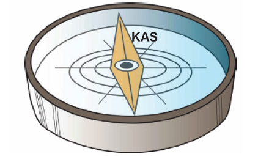

Kutengeneza kengele ya umeme
Sumaku hutumika kutengeneza kengele za umeme. Unapobonyeza kengele mkondo wa umeme huzalisha kani ya usumaku. Hivyo, kani ya usumaku husababisha kugongwa kwa kengele na kutoa mlio.
Kuonesha uelekeo
Dira ni kifaa chenye sumaku ambacho huonesha mwelekeo wa upande wa kaskazini na kusini wa dunia. Angalia au sikiliza maelezo ya Kielelezo namba 10. Dira hutumika kuongoza watu kutambua pande kuu za dunia. Vilevile, hutumika kumwongoza nahodha wa meli na rubani wa ndege kwenda mwelekeo sahihi.
